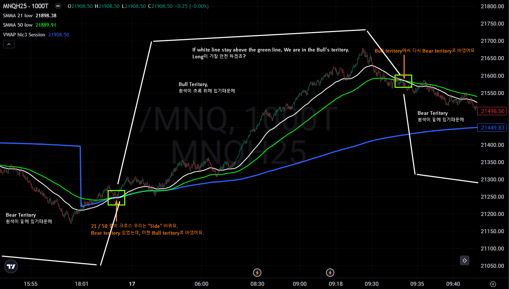
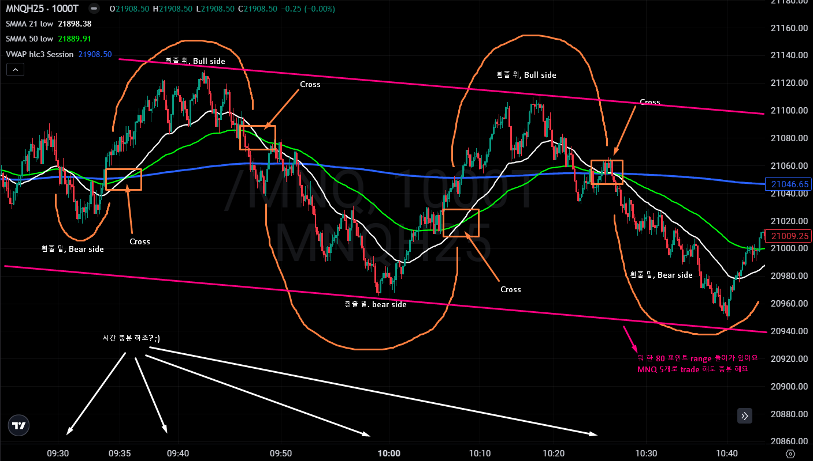
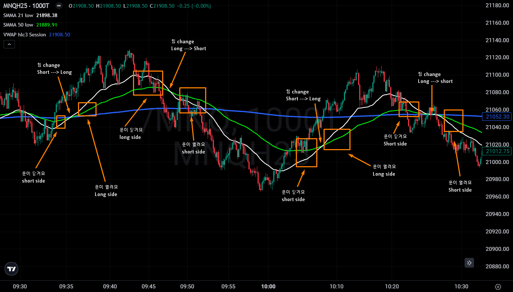
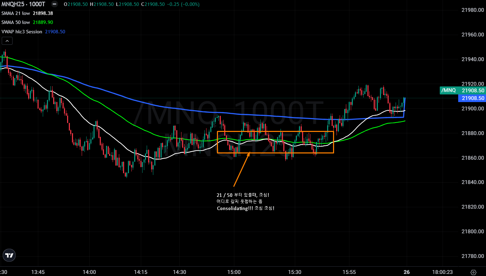

My simple strategy to scalp trading!
SpaceRanger7 그라인더
2025.01.26. 06:32조회 2,750
This is not a 100% win rate trading strategy but it can be used well to win 100%.
You have to size it right depending on your account size and I recommend using MNQ on this strategy.
Of course you can use your current strategy or indicators too and It will give you a higher chance of winning your trades. The greater your knowledge or understanding of a situation, the higher your probability of winning the trade!
Once you have adopted this strategy, It is all about screen timing! More you screen time this strategy, you will see it better.
전 3년 동안 이 방법으로만 썼어요. 스크린타임을 많이 할수록 더 잘 보여요.
가장 중요한 것은 하루 필요한거만 벌고 끝내는거!
딱 한번만 더 매매 하자는 생각은 큰 실수!
오늘 많이 벌었다고 해서 다음날 부자가 된다는건 없잖아요.
토끼와 거북이, Slow and steady wins the race!
도움이 조금이라도 되면 좋겠습니다!
책 추천!
Discipline is Destiny (The power of self-control) by Ryan Holiday
다들 화팅요!





지성감천
시간내서 써주셔서 감사합니다!
2025.01.26. 07:09
김프로
좋은 정보 감사드리며 역시 고수분은 전략이 심플 하시군요 ^^ SMMA 21/ 50 low와 1000틱을 보고 매매 하시는것 같은데 스크린타임을 많이 할수록 더 잘보인다는뜻이 무슨 뜻이신지요?^^
2025.01.26. 07:25
SpaceRanger7
차트 스크린타임 많이 할수록/볼수록 더 잘보여요 뜻이에요 ;)
Long 이나 short 들어가기 쉬워저요! 5pt - 10pt scalping
2025.01.26. 07:36
김프로
SpaceRanger7 아 ~~~ 넹 감사합니다 ^^ 미쿡이시지만 한국식으로 새해 복 많이 받으세요 ^^
2025.01.26. 07:36
김프로
SpaceRanger7 아 참 SMMA 21/50 LOW 지표 는 한국어로 무엇인가요? 닌자지표에 넣어 볼려고 하는데 좀 알려주시면 감사드립니다 ^^
2025.01.26. 07:48
SpaceRanger7
김프로 Ninja 쓰지 않아서 저도 그건 모르겠어요 ㅈㅅ해요
2025.01.26. 09:32
Jaegba
Do u only look at 1000t chart to comfirm the trend and enter ur position??
2025.01.26. 09:00
SpaceRanger7
Oh, absolutely not!
1000T chart makes SMA indicator look clean! That’s it.
I also look at 5000T to see which side we are at in longer terms.
I use all 100T, 500T, 1000T, 2000T and 5000T as well for better confirmation
2025.01.26. 09:34
Jaegba
SpaceRanger7 I see i see
Do u only use tick charts??
Do u not use any timeframe charts at all?
2025.01.26. 11:35
SpaceRanger7
Jaegba I only use Tick chart only! I think it is more clear and clean compared to minute chart
2025.01.26. 11:45
Jaegba
SpaceRanger7 Appreciate ur insight! Ill check out higher term tick charts this weekend
2025.01.26. 12:45
냠뇸념
Legend
2025.01.26. 10:41
슬림한뚱냥이
감사합니다 파란선은 어떤 설정인가요???
2025.01.26. 14:09
SpaceRanger7
Vwap
2025.01.26. 21:32
슬림한뚱냥이
SpaceRanger7 감사합니다~~
2025.01.26. 22:18
단타개미박씨
라이브방송 채팅을 보니 수익 보일때 빨리빨리 포지션 청산한다는 글을 봤습니다 그렇게 되면 손익비가 좋지 않을것 같은데 손익비는 대충 어떻게 설정해 놓으셨나요?
2025.01.26. 14:32
SpaceRanger7
5pt - 10pt scalping 해요.
DCA adding 할때 하고
$50 - $100 보이는대로 청상해요.
Fee 걱정 하지마세요
See money take money 라고 해요 scalping community 에서
2025.01.26. 21:39
험블맨
규칙들 보면 진짜 실력자들만 출금할 수 있는곳이 APEX 인것 같은데 대단하십니다. 진정한 고수시네요..
2025.01.26. 20:54
SpaceRanger7
다른 Prop firm 도 하면서 Apex는 꼭 해야해요. 20 accounts 에 힘!
규칙만 따르면 무조권 payout 받을수있어요 :)
2025.01.26. 21:41
험블맨
SpaceRanger7 네 조언 감사합니다. 규칙들이 좀 까다롭지만 실력을 늘리는데 많은 도움이 되는것 같습니다. Apex 매매하시고 다른 펌에서 매매 하시면 좀더 쉽다는 느낌 받으시는지요?
2025.01.27. 21:57
SpaceRanger7
험블맨 매매 적게 할수록 더 좋아요.
다른 펌에서 Rithmic offer 해주는데만 사용 하는게 가장 편해요 (저는)
Quantower 이라고 펌 전부다 Rithmic connect 해서 카피 할수 있어요.
Topstep, Apex, 둘다 합쳐서 Copy trading 해요
2025.01.27. 22:15
안진마
5 ~ 10pt 익절하신다고 하셨는데 손절은 몇포인트에서 하시나요??
2025.01.26. 23:04
SpaceRanger7
손절 너두 신경 쓰지마세요
MNQ로 매매 하기때문에 손절이 크지 않아요.
5 TP / 10 SL
10 TP / 15 SL
2025.01.27. 00:46
안진마
SpaceRanger7 손절이 더 크시군요
승률를 더 신경쓰시가봐요!!
첫 인사글에는 sma 사용하신다 하셨는데
사진에서의 지표는 smma로 보여지는데
simple moving average 쓰시는게 아니라 smoothed moving average를 사용하시는건가요??
2025.01.27. 00:48
안진마
SpaceRanger7 혹시 매매 시간은 미장에만 하시는건가요??
시간대가 어떻게 되시나요??
2025.01.27. 00:49
SpaceRanger7
안진마 그래서 MNQ 가장 안전하고 매매 하기가 편해요. 완벽한 entry 는 100% 없잔아요. Smooth moving average!
아침 6AM - 9AM EST 미국 시간으로 좋아요,
2025.01.27. 00:53
안진마
SpaceRanger7 50k 기준 마이크로 몇계약 정도 사용하시나요??
2025.01.27. 00:54
안진마
SpaceRanger7 아 프리장에서 주로 매매하시는건가요??
2025.01.27. 00:55
SpaceRanger7
안진마 시작은 5개요, DCA 하면 4번 사용 가능! MNQ 10개 = NQ 1개
DCA 4번 하기전에 profit take 하죠. 다 쓸 필요는 없어요
2025.01.27. 01:49
안진마
SpaceRanger7 dca 4번 다 하시면 마이크로 20개까지 들어가신다는건가요??
2025.01.27. 01:49
SpaceRanger7
안진마 내, DCA 4번다 써도 되요. 다 쓰기전에 profit 거이 꺼내요.
2025.01.27. 01:50
안진마
SpaceRanger7 넵 답변 감사합니다!!
2025.01.27. 01:52
험블맨
안진마 미장시간에 30분에서 1시간만 짧게 매매하시고 일하러 나가신다고 하신 것 같습니다..
2025.01.27. 21:58
안진마
험블맨 대신 답변 감사합니다!!
위에 답글에 6~9 est라고 하셔서 우리나라 시간으로 저녁 8시에서 11시더라구요!!
2025.01.27. 22:01
SpaceRanger7
험블맨 맞아요! 아침에 매매 하고
Full time 일하러 12:30PM - 9PM
월 - 금, 토요일은 Overtime 7:35AM - 1:35PM.
집 빨리 payoff 하고 싶내요 :)
2025.01.27. 22:10
두두
와~ 이걸 지금보네요. 천천히 잘 읽어보겠습니다. 감사합니다!
2025.01.27. 13:14
teaport
Thank you for the great strategy!!
2025.01.27. 15:41
엽이
글을 아예 써주셨군요. 정말 감사합니다 ! :)
2025.01.28. 00:40
토로토토로
SMA close 와 SMA low의 차이점이 무엇일까요?
2025.01.30. 12:19
전우배
sma 계산방식 차이입니다. close 모든캔들 가격 종가계산, low 저가계산
2025.03.04. 19:57
귀여운고양이들
저 책에서 어떤 점 때문에 추천해 주시는지 여쭤봐도 될까요?
2025.01.30. 19:02
NaManDoo
이렇게 공개하기 쉽지 않다고 생각하는데 정말 감사합니다!
2025.02.03. 23:17
엽이
추천해주신 서적의 국내 번역본이 있네요. "절제 수업" << 읽어보겠습니다. :)
2025.02.06. 03:21
마슈멜론
진입시 크로스 날떄 잛게 익절 하는건가요 아님 크로스 날떄 까지 홀딩 하는건가요?
2025.03.05. 01:34
게프
5 tp / 10 sl이면 되게 짧은데 dca할 공간이 어떻게 생기나요?
2025.10.22. 00:00
Sonk
늦었지만 감사드립니다 보고배웁니다.
2025.11.23. 06:09
원본 : My simple strategy to scalp trading!